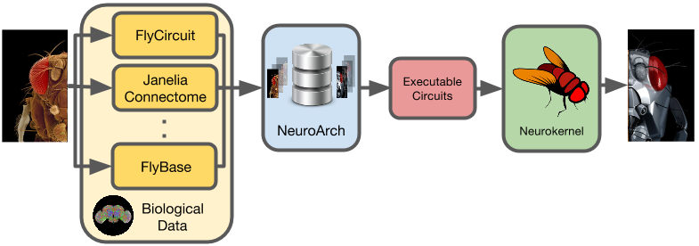

FFBO is One of the 6 Open Science Prize Finalists
Read NIH Press Release
We propose to develop an open graph database platform called NeuroArch to store and process all connected data related to the neural circuits of the fly brain including location, morphology, connectivity and biophysical properties of every neuron of the adult fruit fly brain. This will enable the automatic generation of alternative models of the fly brain that can be simulated efficiently using multiple Graphics Processing Units in order to help elucidate the mechanisms of human neurological disorders and to help identify drug targets.

Located at Columbia University's Department of Electrical Engineering, the Bionet Group is an interdisciplinary research team bringing together faculty and students from the biological and engineering sciences focusing on understanding the function of neural circuits, and the architecture of the fruit fly (Drosophila melanogaster) brain.

Located at National Tsing Hua University, Taiwan, the Brain Research Center focuses on neural circuit mechanisms of cognitive behavior and physiological functions. The works of the lab emphasize simulating large scale neural networks using spiking neural modeling and constructing models based on experimental observations covering from.

The fruit fly brain has ~150,000 neurons. Highly detailed open dataset FlyCircuit at single neuron resolution, along with other open databases of the fly brain provides increasing accessible data to study brain function and neurological disease.

NeuroArch will become an open graph database that exposes the extensive neurobiological data associated with pathologies of interest and provide the programming services (APIs) needed to algorithmically construct executable models.

Neurokernel is an open source platform for emulating the fruit fly brain. It provides an programming interface for efficiently executing modular fly brain models on a cluster of Graphics Processing Units (GPUs).

NeuroArch enables researchers to utilize open fly brain datasets to design executable circuit models that can be evaluated with Neurokernel. Deviations in evaluation results can be used to refine stored models.